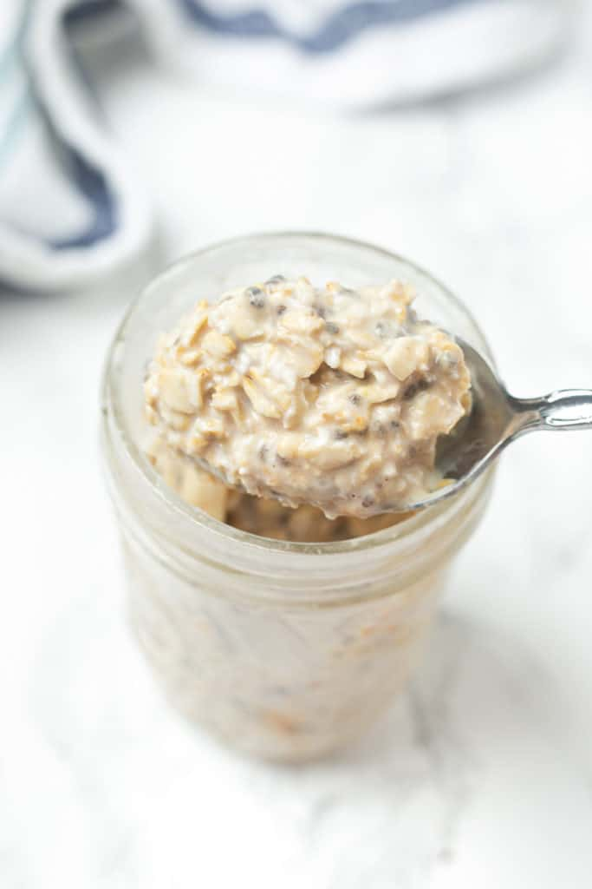

Overnight Oats

Rolled oats mixed with peanut butter, honey, and water to be a perfect creamy snack overnight.
Ingredients
- Rolled Oats
- Honey
- Peanut Butter
- Water
- Cinnamon
Steps
- Put rolled oats of your choice into container
- Scoop out peanut butter about 1/3 of the oats (more for thicker, less for watery)
- Pour honey of your choice (don't put too much, use your intuition)
- Sprinkle some cinnamon
- Water of your choice (more water = watery!)
- Mix well and store in fridge overnight
- Done! Make sure to keep trying if you want a perfect consistency for yourself